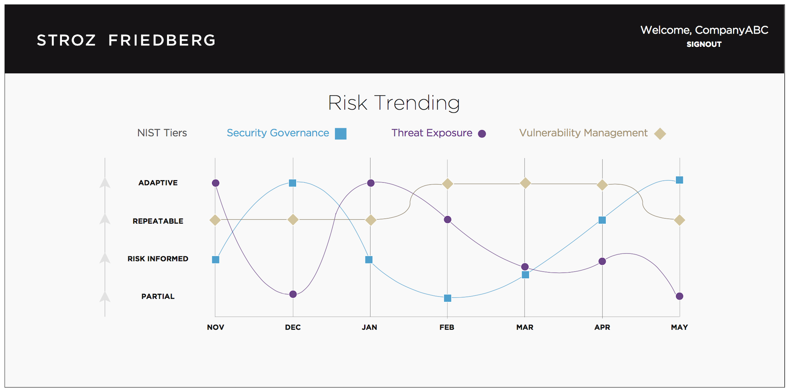
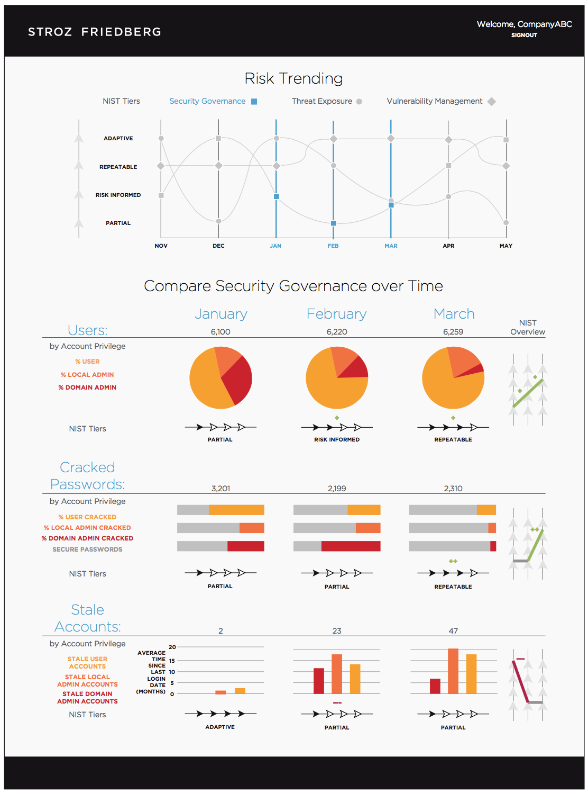
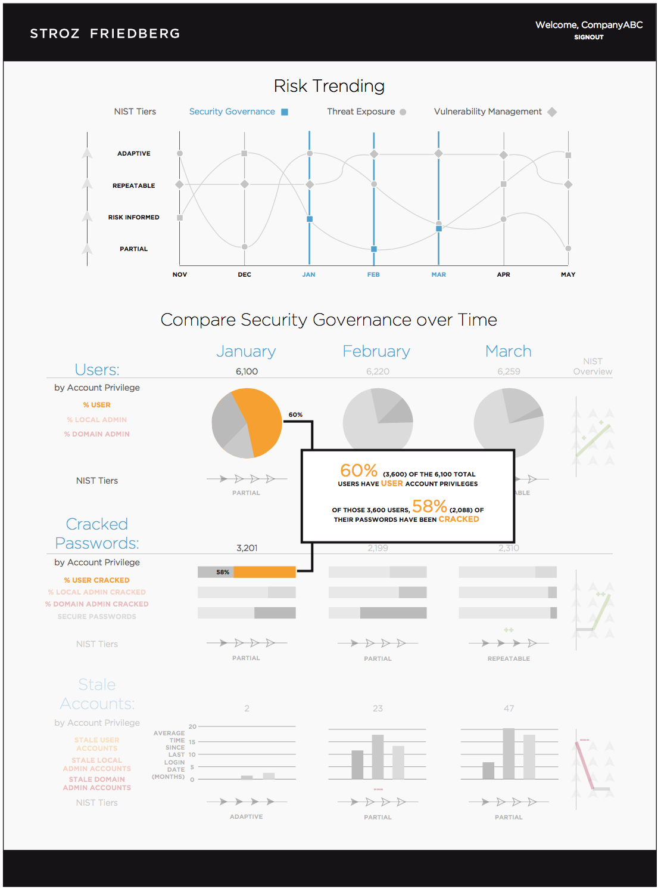

Prototype Design
The CISO Dashboard measures the organization's “vital signs” of security risk across three dimensions: Security Governance, Vulnerability Management, and Threat Exposure. (See process work for further explanation.) The data is measured against standards set by Stroz Friedberg or the users themselves, and encapsulated in the 4 NIST tiers: Adaptive, Repeatable, Risk Informed, and Partial (in order of decreasing Cyber Resilience). The trending graph provides a clear overview of progress across each dimension, or lack thereof, over time. Upon clicking different points on the interactive graph, deeper metrics appear below and allow the user to narrow-in on specific dimensions or dates. For example, upon clicking 3 Security Governance points on the graph, the page expands and Security Governance metrics for each selected date appear. Hovering over specific metrics prompts pop-ups that explain the metrics and how they were calculated.